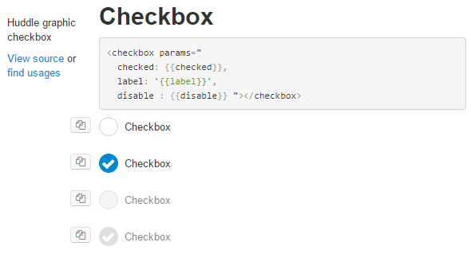
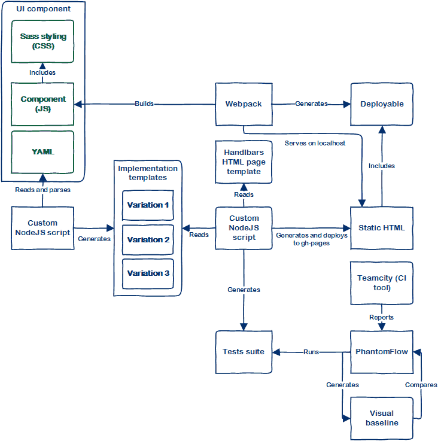

title: Web Components with auto-generated visual tests and living docs date_created: 28th of September, 2016 author_name: James Cryer
tl;dr
Auto-generated Visual Regression Testing? “Living” documentation? How Huddle’s front-end team use YAML to describe all possible states of UI components, from which they generate living component library documentation and Visual Regression Tests using PhantomFlow and a little magic.
What?
Components are supported by most modern JS libraries and frameworks, available with Polymer, React, Angular, or in Huddle’s case Knockout. It shows a clear convergence of ideas in our industry, driven by the Web Component standards; towards better encapsulation of HTML, JS and CSS, a long awaited realisation that Separation of Concerns doesn’t mean separation of technologies.
Better encapsulation means drop-in implementation, and zero coupling to parent components and SPAs. A component is the same, whether in a dynamic production application or in static component library documentation. Using tools like Webpack or Rollup a fully encapsulated component can be versioned, deployed and referenced independently without the need for a full application build. True SPA composition is here, at last – phew!
Better encapsulation also lends itself to explicit parameterization. With careful design this API can allow us to exercise most if not all code paths inside a component. Useful for standard unit testing, but of course these are UI components; useful for Visual Regression Testing (VRT for short).
Show me the magic!
When front-end developers create new components, as well as a JS and CSS file, they also create a YAML file that describes the component, it’s inputs and possible implementations.
description: Huddle graphic checkbox
inputs:
label: Checkbox
disable:
- false
- true
checked:
- false
- true
implementations:
knockout: |
<checkbox params="
checked: {{checked}},
label: '{{label}}',
disable : {{disable}}"></checkbox>
Build scripts then generate a HTML page with all possible state variations of the component. The HTML page can be view locally during development and also deployed to a gh-pages branch in the same repo, allowing everyone in the team to view existing UI components. Below is a screenshot from this simple HTML page, generated from the above YAML.
A visual (VRT) baseline is created for each component variation. The tests are then run locally on the command line or within CI.
The diagram below shows how this all fits together.
Does this “Auto-VRT” actually work?
Auto-generated component variation testing with VRT is an excellent combination of ideas that provides cheap test coverage (~55% coverage), but it’s just another tool in the box. Manually written functional tests are still important to ensure correct integration. As a side-effect of having component level VRT, less reliance is needed on application level VRT.
Like standard VRT, it will show you that something has changed, but it can’t tell you what changed (anecdotally I have never found this a problem), but with small encapsulated components, the surface area of change is much smaller and therefore easy to diagnose and amend.
And the living documentation?
The documentation is the source of truth, it changes and breaks with the code. Not having to maintain UI documentation ensures that it is both relevant and useful, for everyone in the team. It helps communicate the status quo of visual language and interaction design, and improves UI consistency by creating the conversation of reuse vs new approach. Documenting auto-generated variations of components surfaces UI states that are easy to forget about or not immediately apparent. Documenting how components behave in every scenario is important for communicating a complete and holistic design system.
So it’s good then?
A centralised component library is an effective way to maintain or improve UI/UX consistency across any front-end code base. Not having to write component level tests or manually document those components has helped Huddle’s front-end team be more productive and less afraid to refactor. It has proven over the last year to be both scalable and dependable, and has reinforced the idea that web components really are the future of front-end UI development.
BTW, Huddle is hiring ;)
If any of this interests you, and you’d like to work in a truly skilled and innovative team, come join us!